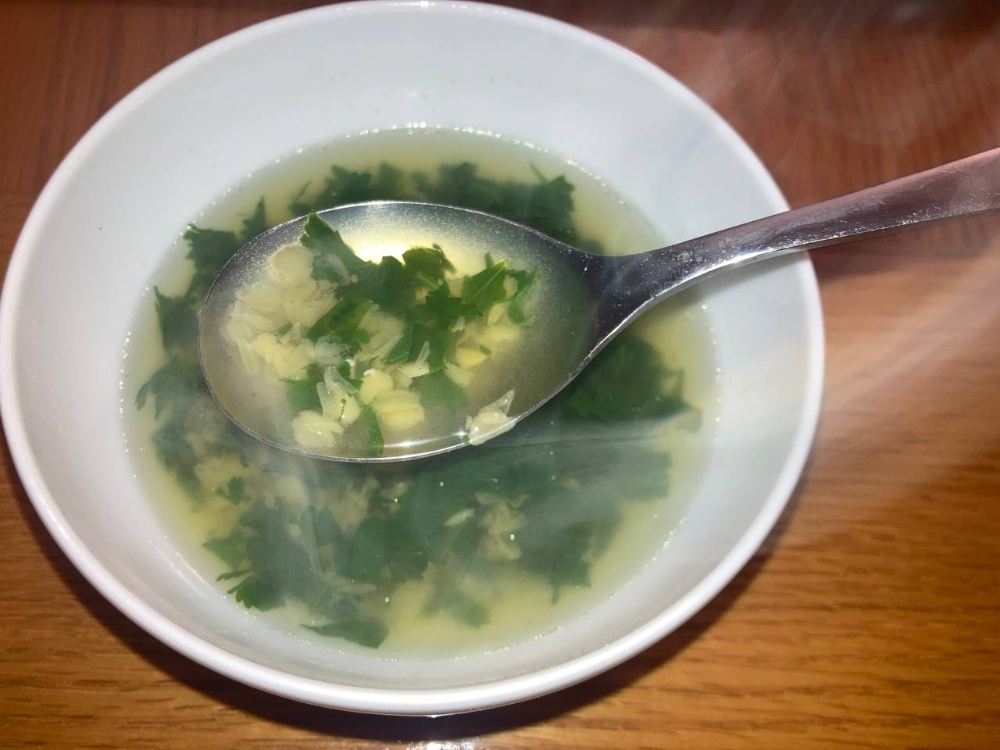

Roasted Cauliflower and Cauliflower Lentil Soup

Ingredients:
- Cauliflower
- 1/2 cup Red lentils
- 1 bunch Cilantro or Parsley
- Olive oil
Cooking directions:
- Wash the cauliflower and place in a pot. If you have a pot that fits
the whole cauliflower, use it. If not, you can cut the cauliflower into
a few chunks so that you can fit them all in the pot.
- Pour water into the pot until the cauliflower is submerged.
- Bring the pot to a boil. Add salt (about 1/2 tbsp) and reduce heat to low.
- Keep cooking until fork goes through cauliflower easily.
- Remove cauliflower from water. Do not discard the water in the pot!
- Wait for the cauliflower to cool a bit. Meanwhile, make a soup with the
leftover yummy water: add 1/2 cup of red lentils and cook until they
fall apart. Then add chopped cilantro, cook 5 more minutes and the soup
is done. Add salt and pepper to taste.
- Drizzle olive oil on your cauliflower, add salt and pepper to taste
and put in an oven that was pre-heated to at least 200 c.
- Roast cauliflower until it gets golden brown spots, like in the picture.
That can take a while, depending on the oven.
Start checking after 20 minutes in the oven.
- That's it! You have a delicious roasted cauliflower and a flavorful
soup.